1มีแอปอะไรบ้าง
| แอป | ใช้ตอนไหน |
|---|---|
| กรอกผลตรวจฟันนักเรียน (ไอคอนสีน้ำเงิน) focus2541.github.io/dental-exam/entry.html | ใช้เป็นหลัก กรอกผล ช่วยกันกรอกหลายเครื่อง พิมพ์ใบแจ้งผลและรายงานสรุป |
| เตรียมแบบตรวจฟันนักเรียน (ไอคอนสีเขียว) focus2541.github.io/dental-exam/ | เมื่ออยากได้แบบตรวจเปล่าไว้เขียนมือ (ไฟล์ Excel แยกห้อง พร้อมพิมพ์ A4) |
ทั้งสองแอปอ่านไฟล์รายชื่อได้ทุกแบบ: Excel (.xlsx .xls .csv), Word (.docx) และ PDF (รวมไฟล์สแกน) ไม่ต้องจัดรูปแบบไฟล์ก่อน
2ติดตั้ง (ครั้งเดียวต่อเครื่อง)
- เปิดลิงก์แอปใน Chrome (คอมหรือมือถือ Android)
- กด ติดตั้งเป็นแอป บนหน้าปก
ถ้าไม่มีปุ่ม: เมนู ⋮ > ส่ง บันทึก และแชร์ > ติดตั้งหน้าเป็นแอป (บนมือถือ: ⋮ > เพิ่มลงหน้าจอหลัก) - เปิดแอปจากไอคอนบนเดสก์ท็อปหรือหน้าจอมือถือได้เลย
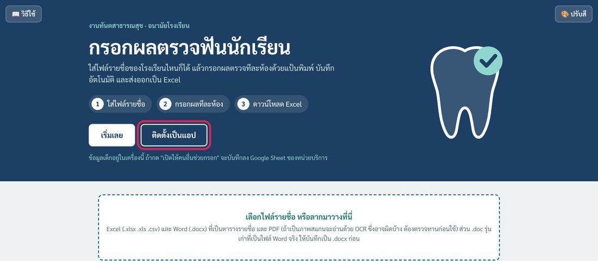
3คนนำทีม: เริ่มรอบตรวจ
โรงเรียนหนึ่งให้คนเดียวเป็นคนใส่รายชื่อ คนอื่นไม่ต้องใส่ซ้ำ
- เปิดแอปกรอกผล กด เลือกไฟล์รายชื่อ หรือลากไฟล์มาวาง
- ใส่ ชื่อโรงเรียน และ วันที่ตรวจ ดูว่าแต่ละห้องมีจำนวนนักเรียนถูกต้อง
- กด เริ่มกรอกผลตรวจ ▶
- ถ้ามีคนช่วยกรอก กด 👥 เปิดให้คนอื่นช่วยกรอก (กดครั้งเดียว) แล้วกด 📋 คัดลอกลิงก์ หรือ ส่งทาง LINE
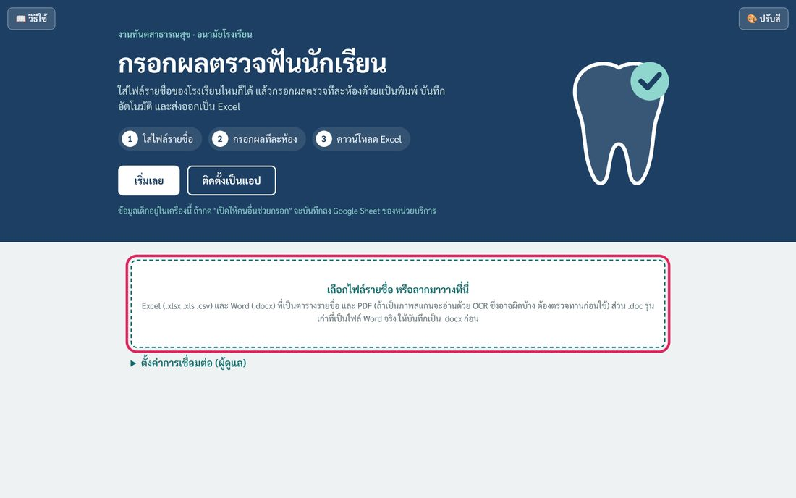
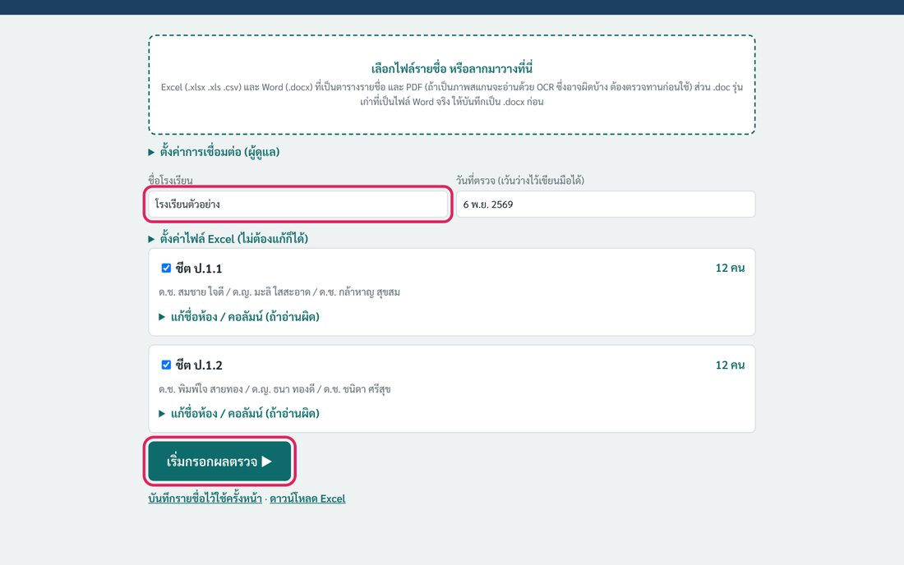
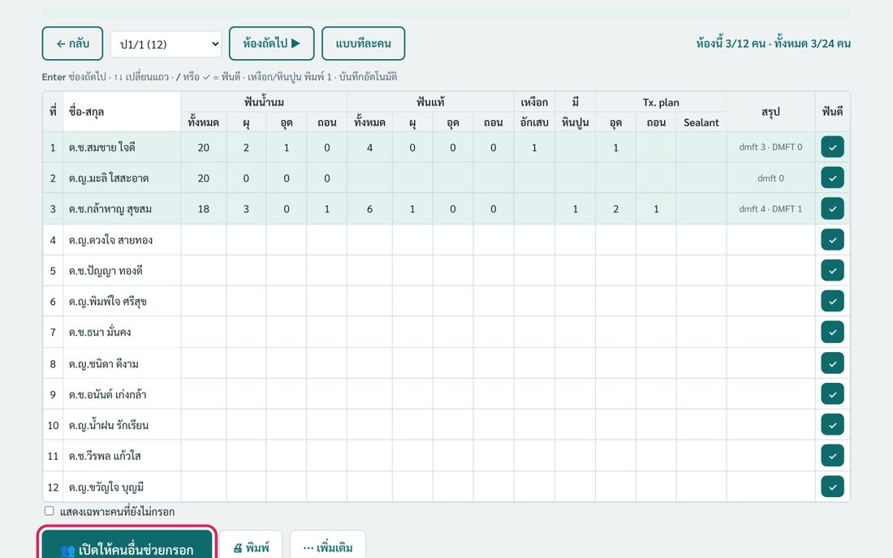
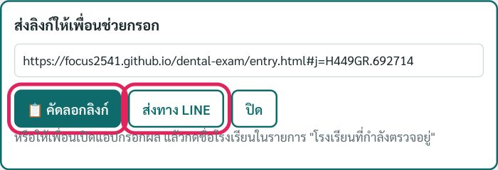
ถ้าแอปอ่านรายชื่อผิด (ชื่อสลับคอลัมน์ ห้องไม่ถูก)
ในการ์ดของชีตนั้น กด แก้ชื่อห้อง / คอลัมน์ (ถ้าอ่านผิด) แล้วเลือกคอลัมน์ที่ถูกต้อง ถ้าเป็น PDF สแกน กด ตรวจทานรายชื่อที่อ่านจากสแกน แล้วแก้ชื่อหรือเลขบัตรที่ขึ้นสีส้มเทียบกับภาพต้นฉบับ
ใช้รายชื่อเดิมซ้ำครั้งหน้า
กด บันทึกรายชื่อไว้ใช้ครั้งหน้า ครั้งต่อไปจะมีชื่อโรงเรียนให้กดเปิดได้เลย ไม่ต้องอ่านไฟล์ใหม่
4คนช่วยกรอก: เข้าร่วม
จากนั้นเลือกห้องของตัวเองแล้วกรอก ไม่ต้องใส่รหัส ไม่ต้องอัปโหลดรายชื่อ
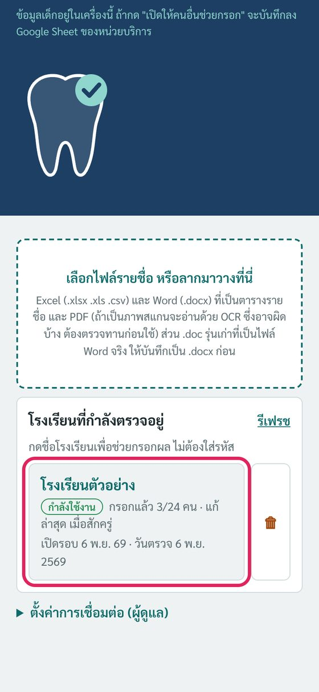
ป้ายในรายการโรงเรียน: กำลังใช้งาน = มีคนกรอกใน 15 นาทีล่าสุด · พักอยู่ · ยังไม่เริ่มกรอก · ตรวจครบแล้ว
5กรอกผล
มี 2 แบบ สลับได้ด้วยปุ่ม แบบทีละคน / แบบตาราง (มือถือเปิดแบบทีละคนให้เอง)
แบบทีละคน (เหมาะกับมือถือ)
- เด็กฟันดี กด ✓ ฟันดี ไม่มีฟันผุ บันทึกแล้วไปคนถัดไปทันที
- กรอกตัวเลขฟันน้ำนม / ฟันแท้ (ทั้งหมด ผุ อุด ถอน) กด Enter ไปช่องถัดไป
- แตะ เหงือกอักเสบ มีหินปูน ถ้าพบ
- ต้องรักษา: ใส่จำนวนซี่ อุด / ถอน / Sealant
- เลือกชื่อจากรายการด้านบนเพื่อข้ามไปคนไหนก็ได้ คนที่กรอกแล้วมี ✓
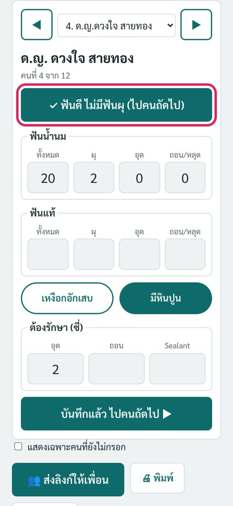
แบบตาราง (เหมาะกับคอม กรอกจากกระดาษ)
- Enter ช่องถัดไป · ↑ ↓ เปลี่ยนแถว · / = ฟันดี · เหงือก/หินปูน พิมพ์ 1
6ไม่มีสัญญาณ
กรอกต่อได้ตามปกติ แถบด้านบนจะขึ้นว่า ยังไม่ได้ส่ง … คน พอมีเน็ต แอปส่งขึ้น Google Sheet ให้เอง ไม่ต้องกดอะไร
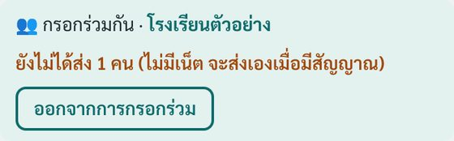
อ่านไฟล์ PDF สแกนต้องใช้เน็ต ให้อ่านรายชื่อและเปิดรอบตอนอยู่ที่ รพ.สต. ก่อนออกไปโรงเรียน
7พิมพ์
กดเมนู 🖨 พิมพ์ ในหน้ากรอกผล
| เมนู | ได้อะไร |
|---|---|
| ผลตรวจห้องนี้ (ตาราง) | แบบตรวจทั้งห้องพร้อมตัวเลข A4 แนวนอน |
| ใบแจ้งผลผู้ปกครอง | A4 แผ่นละ 2 คน ตัดครึ่ง เลือกพิมพ์เฉพาะเด็กที่ต้องรักษาหรือทุกคน ห้องนี้หรือทุกห้อง |
| รายงานสรุป | ร้อยละฟันผุ ไม่มีฟันผุ dmft/DMFT รายห้อง และรายชื่อเด็กที่ต้องรักษา |
ก่อนพิมพ์ใบแจ้งผลครั้งแรก เปิด ตั้งค่าใบแจ้งผล ใส่ รพ.สต. เบอร์โทร วันนัด (เครื่องจำไว้)
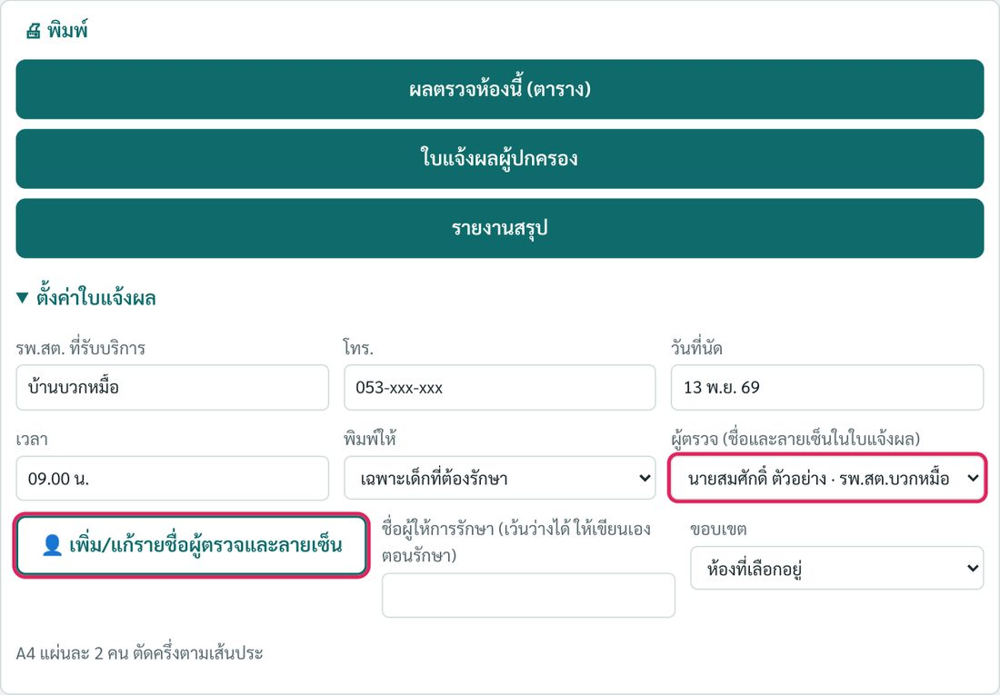
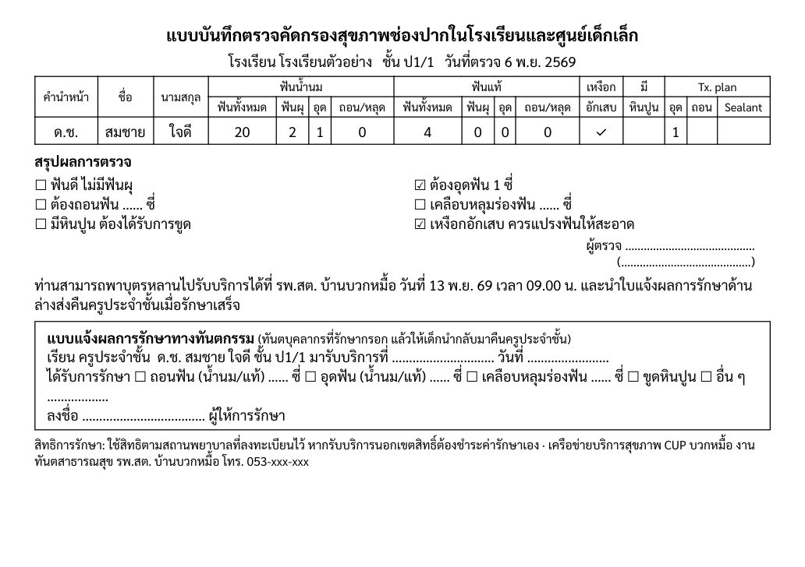
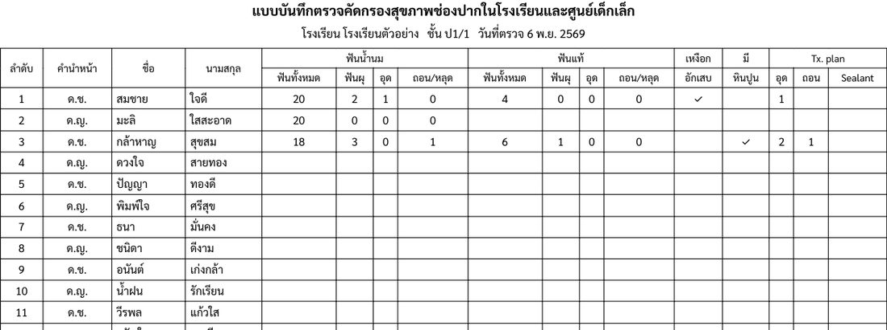
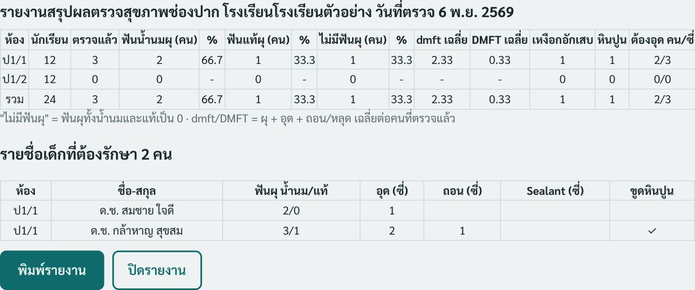
กรอบ "แบบแจ้งผลการรักษา" ในใบแจ้งผล ใครกรอก
ทันตบุคลากรที่รักษาเด็กกรอกตอนเด็กมารับบริการ แล้วลงชื่อ ให้เด็กนำกลับไปคืนครูประจำชั้น ครูจะรู้ว่าใครรักษาแล้ว
ไฟล์ Excel ผลตรวจ (มีชีตสรุปและชีตเด็กที่ต้องรักษา): เมนู ⋯ เพิ่มเติม > ดาวน์โหลดผลเป็น Excel ไฟล์อยู่ในโฟลเดอร์ Downloads (กด Ctrl+J เพื่อดู)
8ผู้ตรวจและลายเซ็น
- 🖨 พิมพ์ > ตั้งค่าใบแจ้งผล > 👤 เพิ่ม/แก้รายชื่อผู้ตรวจและลายเซ็น
- ใส่ชื่อ ตำแหน่ง หน่วยบริการ แล้ว ✍ วาดลายเซ็น หรือ 📷 อัปโหลดรูป ลายเซ็นบนกระดาษขาว กดบันทึก
- ก่อนพิมพ์ เลือกชื่อในช่อง ผู้ตรวจ ชื่อ ตำแหน่ง และลายเซ็นจะพิมพ์ให้เอง
เพิ่มครั้งเดียว ทุกเครื่องในเครือข่ายเลือกได้ (ต้องมีเน็ตตอนเพิ่มหรือแก้)
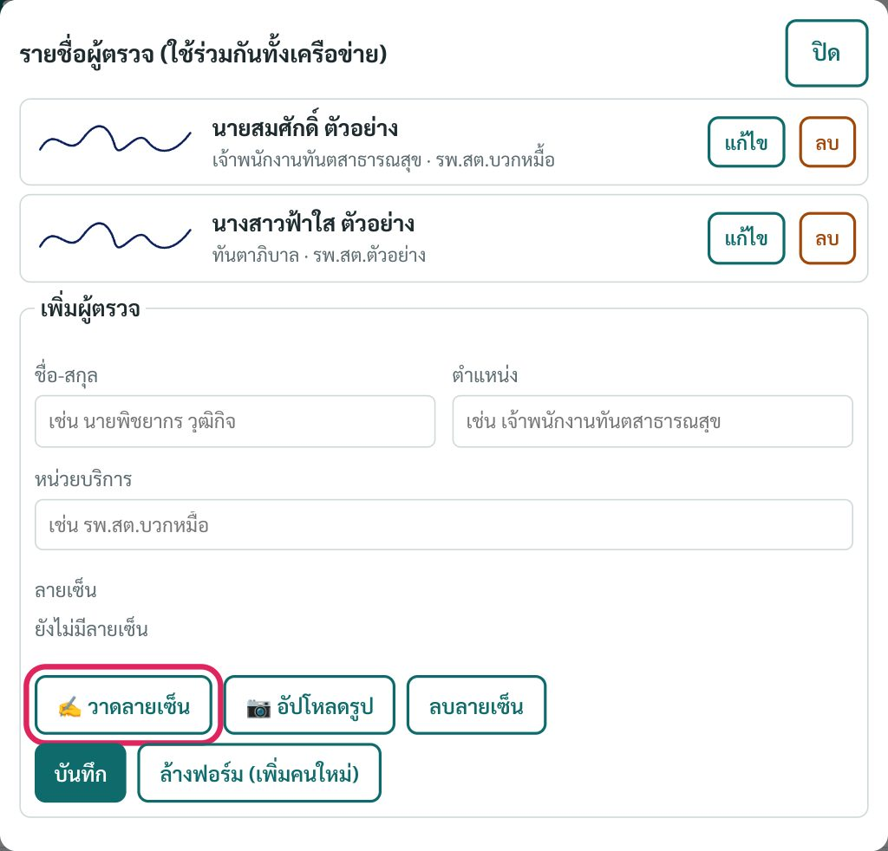
9ลบรอบ / ล้างข้อมูล
- ลบรอบตรวจทั้งรอบ (เช่น รอบทดสอบ หรืออัปโหลดซ้ำ): กด 🗑 ข้างชื่อโรงเรียนในรายการ หรือในรอบนั้นกด ⋯ เพิ่มเติม > ลบรอบตรวจนี้ออกจาก Google Sheet กู้คืนไม่ได้ ดาวน์โหลด Excel เก็บไว้ก่อน
- ล้างเฉพาะในเครื่องนี้: ⋯ เพิ่มเติม > ล้างผลที่กรอกในเครื่องนี้ (ถ้าอยู่ในรอบกรอกร่วม ให้กดออกจากการกรอกร่วมก่อน)
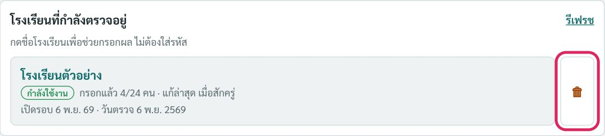
เปลี่ยนสีแอปหรือโหมดมืด: ปุ่ม 🎨 ปรับสี มุมขวาบนของหน้าปก
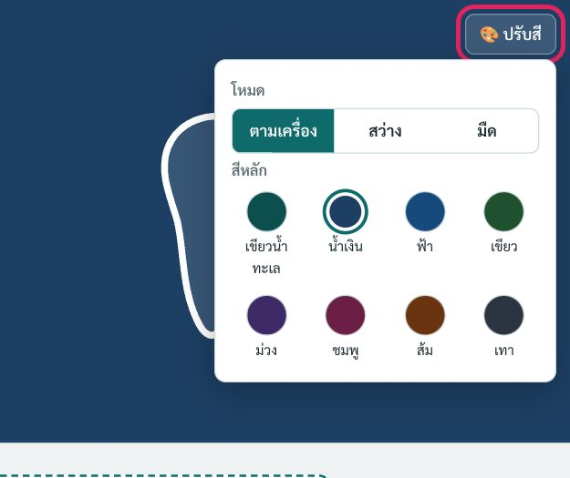
10ปัญหาที่พบบ่อย
เปิดแอปแล้วยังเป็นหน้าเก่า
กด Ctrl+Shift+R หรือปิดแอปแล้วเปิดใหม่
ไม่เห็นรายการ "โรงเรียนที่กำลังตรวจอยู่"
ต้องมีเน็ต และต้องมีคนกด "เปิดให้คนอื่นช่วยกรอก" แล้ว ลองกด รีเฟรช
ผลจากอีกเครื่องยังไม่ขึ้น
แอปดึงผลทุก 20 วินาที ดูแถบด้านบนของทั้งสองเครื่องว่าขึ้น ✓ ส่งครบแล้ว
ติดตั้งแอปไม่ได้ ปุ่มกดไม่ได้
ถ้าแถบที่อยู่มีปุ่ม เปิดในแอป แปลว่าติดตั้งแล้ว กดปุ่มนั้นเพื่อเปิด
หาไฟล์ที่ดาวน์โหลดไม่เจอ
กด Ctrl+J แล้วกดไอคอนโฟลเดอร์ข้างชื่อไฟล์
ข้อมูลเก็บที่ไหน ใครเห็นได้บ้าง
ถ้าใช้เครื่องเดียว ข้อมูลอยู่ในเครื่องนั้น ถ้าเปิดให้คนอื่นช่วยกรอก รายชื่อและผลตรวจจะเก็บใน Google Sheet ของ รพ.สต.บวกหมื้อ ทุกคนที่มีแอปเห็นรายการโรงเรียนและเข้ากรอกได้ จึงควรใช้ในทีมเท่านั้น